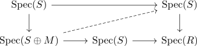

cotangent module of spec
Proposition
Let $\varphi: R \rightarrow S$ be a ring-homomorphism Then the cotangent module of $\mathrm{Spec}(\varphi)$ and cotangent module of the ring map $\varphi$ coincide
Proof
Recall that a quasi-coherent module over $\mathrm{Spec}(S)$ is just a module over $S$. So it suffices to consider the lifts

and show that it is representable.
But this is equivalent to the set of lifts
\begin{displaymath}
\begin{tikzcd}
S & & \arrow[]{ll}{\mathrm{id}} \arrow[dashed]{lld}{}S \\
S \oplus M \uar \lar & S \lar & R \uar \lar \\
\end{tikzcd}
\end{displaymath}which is precisely the set of \(R\)-algebra sections of $S \oplus M \twoheadrightarrow S$ and hence is representable by the cotangent module (cf. derivations are sections of square-zero extensions).